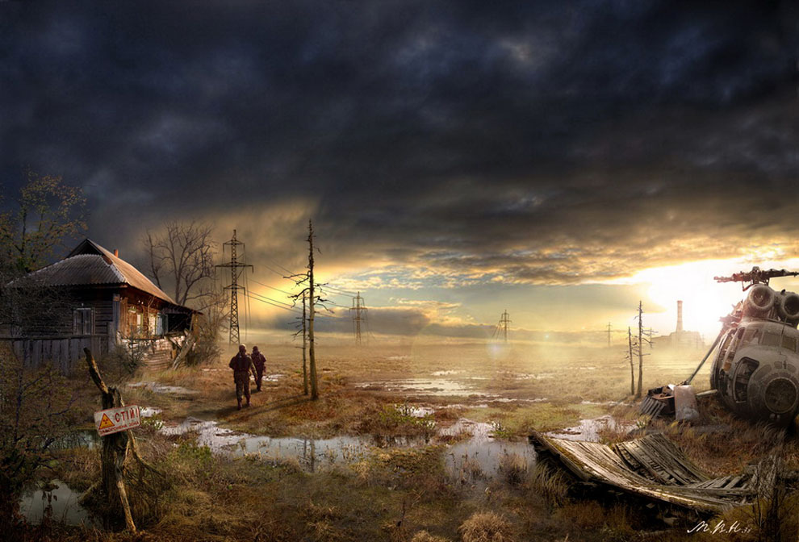

You decide to start heading to the country to get away from danger.After a couple of hours you stumble upon a barn. You settle down and make this your new home. You never wonder about your family or friends, because they abandoned you in the hospital when the apocalyspe started.

SAFETY AT LAST!
You were able to survive for years off of the land, and you die of old age.